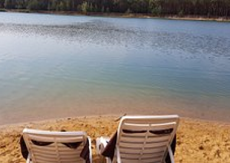
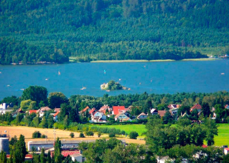
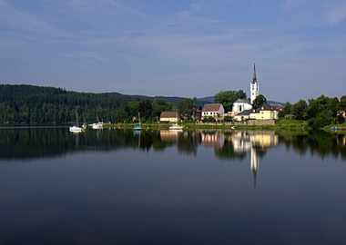
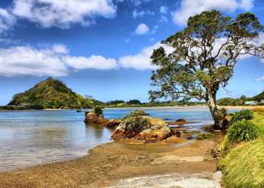

тут ти узнаеш про природу

природа є природним середовищем людини оскільки без природи ми можемо жити. Природа оточує нас і допомагає нам. Наприклад, якби Не було дерев у нас не було б свіжого повітря. Та й просто нам приємно коли нас оточує щось красиве, тобто природа. Вона піднімає нам настрій якось так
тут ти узнаеш про озера

Лгота розташована біля праги

Махове озеро розташоване біля доксі

липно розташоване біля шумави

Озеро Байкал

Чорне озеро
